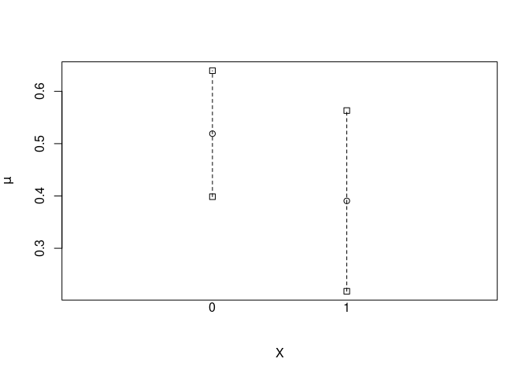

Goals: create a unified interface for regression standardization to obtain estimates of causal effects such as the average treatment effect, or relative treatment effect.
- Should be easy to use for applied practitioners, i.e., as easy as running glm or coxph.
- We want to implement modern, theoretically grounded, doubly-robust estimators, and their associated variance estimators.
- We want it to be extensible for statistical researchers, i.e., possible to implement new estimators and get other models used within the interface.
- Robust and clear documentation with lots of examples and explanation of the necessary assumptions.
Difference between stdReg2 and stdReg
stdReg2 is the next generation of stdReg. If you are happy using stdReg, you can continue using it and nothing will change in the near future. With stdReg2 we aim to solve similar problems but with nicer output, more available methods, the possibility to include new methods, and mainly to make maintenance and updating easier.
Installation
You can install the development version of stdReg2 from GitHub with:
# install.packages("remotes")
remotes::install_github("sachsmc/stdReg2")Example
This is a basic example which shows you how to use regression standardization in a logistic regression model to obtain estimates of the causal risk difference and causal risk ratio:
library(stdReg2)
# basic example
# need to correctly specify the outcome model and no unmeasured confounders
# (+ standard causal assumptions)
set.seed(6)
n <- 100
Z <- rnorm(n)
X <- rnorm(n, mean = Z)
Y <- rbinom(n, 1, prob = (1 + exp(X + Z))^(-1))
dd <- data.frame(Z, X, Y)
x <- standardize_glm(
formula = Y ~ X * Z,
family = "binomial",
data = dd,
values = list(X = 0:1),
contrasts = c("difference", "ratio"),
reference = 0
)
#> Warning in model.matrix.default(mt, mf, contrasts): non-list contrasts argument
#> ignored
x
#> Outcome formula: Y ~ X * Z
#> Outcome family: quasibinomial
#> Outcome link function: logit
#> Exposure: X
#>
#> Tables:
#> X Estimate Std.Error lower.0.95 upper.0.95
#> 1 0 0.519 0.0615 0.399 0.640
#> 2 1 0.391 0.0882 0.218 0.563
#>
#> Reference level: X = 0
#> Contrast: difference
#> X Estimate Std.Error lower.0.95 upper.0.95
#> 1 0 0.000 0.0000 0.000 0.00000
#> 2 1 -0.129 0.0638 -0.254 -0.00353
#>
#> Reference level: X = 0
#> Contrast: ratio
#> X Estimate Std.Error lower.0.95 upper.0.95
#> 1 0 1.000 0.000 1.000 1.000
#> 2 1 0.752 0.126 0.505 0.999
plot(x)
tidy(x)
#> X Estimate Std.Error lower.0.95 upper.0.95 contrast transform
#> 1 0 0.5190639 0.06149960 0.3985269 0.639600881 none identity
#> 2 1 0.3905311 0.08816362 0.2177336 0.563328623 none identity
#> 3 0 0.0000000 0.00000000 0.0000000 0.000000000 difference identity
#> 4 1 -0.1285328 0.06377604 -0.2535315 -0.003534039 difference identity
#> 5 0 1.0000000 0.00000000 1.0000000 1.000000000 ratio identity
#> 6 1 0.7523758 0.12604216 0.5053377 0.999413910 ratio identityFor more detailed examples, see the vignette “Estimation of causal effects using stdReg2”.
Citation
citation("stdReg2")
#> To cite package 'stdReg2' in publications use:
#>
#> Sachs M, Sjölander A, Gabriel E, Ohlendorff J, Brand A (2024).
#> _stdReg2: Regression Standardization for Causal Inference_. R package
#> version 1.0.0, <https://sachsmc.github.io/stdReg2>.
#>
#> A BibTeX entry for LaTeX users is
#>
#> @Manual{,
#> title = {stdReg2: Regression Standardization for Causal Inference},
#> author = {Michael C Sachs and Arvid Sjölander and Erin E Gabriel and Johan Sebastian Ohlendorff and Adam Brand},
#> year = {2024},
#> note = {R package version 1.0.0},
#> url = {https://sachsmc.github.io/stdReg2},
#> }